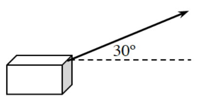
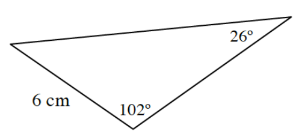

Perform the indicated vector operations.
\(\langle -5,7\rangle+\langle 3,-3\rangle\)
\((-7\mathbf{i}-2\mathbf{j})-2(3\mathbf{i}-\mathbf{j})\)
What is the angle between \(\langle -4,5\rangle\) and \(\langle 2,7\rangle\)?
If \(\vec{\text{u}}=2\mathbf{i}-3\mathbf{j}\) and \(\vec{\text{v}}=-4\mathbf{i}-2\mathbf{j}\), evaluate \(\vec{\text{u}}\cdot\vec{\text{v}}\). What does your answer tell you about the two vectors?
Construct a unit vector that is perpendicular to \(5\mathbf{i}+12\mathbf{j}\). Note that there are two solutions.
A jet is flying in a direction \(30^\circ\) north of east with a speed of \(430\) mph. What are the north and east components of its velocity?
In a triangle, \(A=20^\circ\), \(a=9\), and \(b=23\). Solve the triangle.
If \(\cos(x)=-\frac{5}{7}\) and \(\pi
Solve each of the following equations.
\(50x^{2/3}=100\)
\(\log_3(x+1)+\log_3(x)=\log_3(12)\)
Solve: \(\frac{2x}{x+3}-\frac{3}{x+2}=\frac{11-2x}{x^2+5x+6}\)
Rewrite the following fraction as a sum of two fractions with linear denominators by using partial fraction decomposition.
\(\frac{9x+6}{(x+2)(x-1)}\)
To slide a crate across a floor, a rope is attached and pulled with a constant force of \(50\) pounds at an angle of \(30^\circ\). How much work is done if the box is dragged \(10\) feet?

Use graph paper to complete the following problems.
Draw \(\vec{\text{a}}=2\mathbf{i}+3\mathbf{j}\), \(\vec{\text{b}}=\mathbf{i}-\mathbf{j}\), and \(\vec{\text{c}}=-3\mathbf{i}+2\mathbf{j}\).
Draw \(\vec{\text{a}}+\vec{\text{b}}\) on the graph paper.
Write \(\vec{\text{a}}+\vec{\text{b}}\) in \(\mathbf{i},\mathbf{j}\) form.
Write \(\vec{\text{b}}+\vec{\text{c}}\) and \(\vec{\text{c}}-\vec{\text{a}}\) in \(\mathbf{i},\mathbf{j}\) form without drawing them.
Calculate the area of the triangle shown.

Graph \(l(x)=2\log_5(x)-1\).
Write a sum that will approximate the area under the curve \(f\left(x\right)=\sin\left(x\right)\) on the interval \(0\le\theta\le\pi\) using ten left endpoint rectangles.
Sketch the graph of a function that is increasing only on \(x<-2\) and \(x>2\) and concave down only for \(x<0\).
Solve each of the following inequalities.
\(0<-x^4+2x^3+4x^2-8x\)
\(\frac{5x-10}{2x^3+x^2-50x-25}\geq0\)
Graph \(r(x)=\frac{2x^2-4x-16}{x^2-9}\). State the locations of any holes and/or asymptotes.